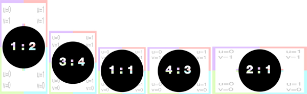
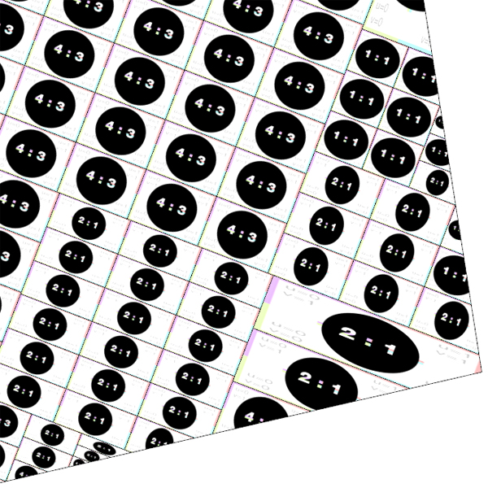

imageBestRatio
Syntax
string imageBestRatio(searchQuery, axesRatio)
Parameters
- searchQuery (string)
Search query to apply on list of all files in the workspace. See fileSearch / filesSearch for details about the syntax. - axesRatio (string)
"xy", "xz", "yx", "yz", "zx", "zy" Defines which scope axes ratio is used as a reference.
Returns
Returns texture with best ratio match (according to axesRatio).
Description
This function returns the texture with the best ratio match, from the files specified by searchQuery, according to the specified combination of axes.
Note: In case multiple files share the best ratio, a random file is returned among those
Related
- assetApproxRatio function
- assetApproxSize function
- assetBestRatio function
- assetBestSize function
- assetFitSize function
- fileBasename function
- fileDirectory function
- fileExtension function
- fileName function
- fileRandom function
- imageApproxRatio function
Examples
Setting up texturing based on the best pixel ratio
The goal is to set up the texturing, depending on the best pixel ratio of the list of desired textures. The following textures all have different resolutions.

Lot -->
s('0.9,'0.9,'0.9)
center(xz)
RecursiveSplit
RecursiveSplit -->
case scope.sx >= 1.5 && scope.sz >= 1.5:
split(x) { ~scope.sx/3 : split(z) { ~scope.sz/3 : RecursiveSplit }* }*
else: Texture
Texture -->
setupProjection(0, scope.xz, scope.sx, -scope.sz)
projectUV(0)
texture(imageBestRatio("/myProject/assets/textures/*.jpg", "xz"))

Copyright ©2008-2022 Esri R&D Center Zurich. All rights reserved.